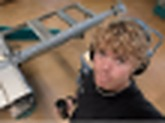

Praktisk håndelag & teknisk forståelse
God fornemmelse for praktiske løsninger, værktøj, opmåling og solid forståelse for IT.
Bygningssnedker · Curriculum Vitae
Ansøger til læreplads som bygningssnedker
Mødestabil og praktisk anlagt lærling, der gerne vil lære bygningssnedkerfaget ordentligt fra bunden — både med opmåling og samling på værkstedet og med montage og finish ude hos kunderne.

Hvem jeg er som lærling i bygningssnedkerfaget
Jeg søger en læreplads som bygningssnedker, hvor jeg kan kombinere praktisk håndværk med en stærk lyst til at lære faget ordentligt fra bunden — både på værkstedet og ude på montage og byggeplads. Jeg har hænderne skruet ordentligt på, er teknisk anlagt og trives med at fordybe mig i opgaver, hvor præcision, orden og godt håndværk er i fokus.
Jeg er lærenem, nysgerrig og vant til både fysisk arbejde, højt tempo og lange arbejdsdage. Samtidig er jeg udadvendt og nem at arbejde sammen med — både blandt svende på værkstedet og ude hos kunder. I min fritid spiller jeg musik og nyder at fordybe mig i nye praktiske og kreative emner.
Praktiske kompetencer jeg tager med ind i lærepladsen
God fornemmelse for praktiske løsninger, værktøj, opmåling og solid forståelse for IT.
Vant til lange, fysisk krævende vagter og struktureret arbejde fra køkken- og restaurationsbranchen.
Erfaring med at tage ansvar for åbne- og lukkevagter, planlægning og forefaldende håndværksopgaver.
Bidrager til en god stemning blandt kollegaer og taler naturligt og imødekommende med kunder.
Klik på et billede for at se det større
Et lille udvalg af billeder fra praktisk bygningssnedker- og værkstedsarbejde med træ, opmåling, samling, opspænding og afsluttende finish.
Klargøring, udmåling med afstandsklodser og samling af sortmalet lamel- og dørkonstruktion på snedkerværksted.
To ens ruminddelte egetræsreoler med geringssamlinger og korkbagplade under samling på værkstedsbordet.
Færdig egetræsreol med ruminddeling, korkbagplade og præcise geringssamlinger monteret på væg.
Præcis opspænding og limning af massivtræsemner med korpus- og skruetvinger på samlebordet.
Samling, fastspænding med skruetvinger og finisharbejde på sortmalet lamelkonstruktion ved høvlebænken.
Afsluttende finish- og fugearbejde ved trægulv, fodpaneler og fransk glasdør.
Tryk afspil for at se processen i praksis
Oliebehandling af eget fremstillet endetræsskærebræt på værkstedet — afsluttende finish, så træets struktur og åretegning træder tydeligt frem.
Præcis maskinbearbejdning af træemne opspændt på vakuumbord — erfaring med moderne snedkermaskiner i samspil med traditionelt håndværk.
Kronologisk oversigt — fra travle vagter til praktisk pedelarbejde
Praktisk klargøring og dagligt køkkenarbejde i et travlt arbejdsmiljø med fokus på effektivitet, orden, stabilitet og tæt samarbejde i teamet.
Ansat i specialølbar over sommeren sideløbende med SFO-arbejde. Gav stærk rutine i kundekontakt, overblik og høj arbejdsindsats.
Lærervikar med både fastlagt skema og vikartimer på alle klassetrin og i de fleste fag — herunder mange timer uden vikarplan, hvor jeg selv stod for planlægningen. Over sommeren ansat i SFO med åbne- og lukkevagter samt igangsætning af aktiviteter som rollespil og boldspil.
Dagligt arbejde med børn samt igangsætning af lege og aktiviteter i tæt samarbejde med kollegaer.
Arbejde som runner på gourmetrestaurant med højt tempo, præcis koordinering samt lange og fysisk krævende vagter.
Løbende praktisk arbejde med forefaldende håndværks-, vedligeholdelses- og haveopgaver.
Varemodtagelse, opfyldning af hylder, rengøring og kundebetjening.
Bartender ved private fødselsdagsfester og lignende arrangementer.
Klar til opstart eller prøvedag
Ring eller skriv meget gerne — jeg kommer gerne forbi værkstedet til en uforpligtende snak eller en prøvedag, så I kan se mig an i praksis.